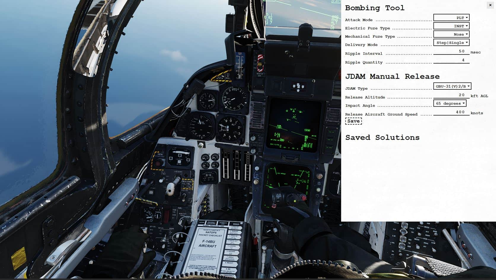

Bombing Tool
In the F-14, the Bombing Tool gives the Pilot a simplified method to transfer desired bombing release settings to Jester. The tool is entirely optional to use for the pilot, as the traditional method of transferring weapon release settings via the Jester Wheel works alongside the bombing tool. The tool simplifies the workflow for the Pilot by reducing the time spent in the Jester wheel, if you require multiple release settings to be set.
For the B(U) aircraft variant, the tool also provides a JDAM Manual Release Calculator. This can be used to calculate horizontal RMAX (Maximum Release Range) & TOF (Time of Flight) at different drop parameters, useful in preparing for a TOO JDAM release.
The tool can be accessed with RCtrl+B.

Input
For each release setting, Jester will automatically change the setting once an option is entered.
Attack Mode
- Pilot (PLT)
- Target (TGT)
- Initial Point (IP)
- Manual (MAN)
Electric Fuze Type
- Instantaneous (INST)
- Preset Time Delay 1 (DLY 1)
- Preset Time Delay 2 (DLY 2)
- Air-burst (VT)
- Safe (SAFE)
Mechanical Fuze Type
- Nose
- Nose Tail
Delivery Mode
- Step | Single
- Step | Pairs
- Ripple | Single
- Ripple | Pairs
Ripple Interval
Tells Jester to set the desired bomb release interval in milliseconds (ms). You can set it in 10 ms increments per click.
Ripple Quantity
Tells Jester the desired quantity of bombs to release upon the press of 'weapon release'.
JDAM Manual Release
Used to calculate horizontal RMAX (Maximum Release Range) & TOF (Time of Flight) at different drop parameters.
JDAM Type
Set to desired JDAM type (drag and glide coefficients are adjusted per JDAM type).
Release Altitude
Enter altitude at which you plan to release the weapon. Values in kft, increment of 5 per click.
Impact Angle
Set desired final weapon impact angle. Currently only 65 degrees modelled & selectable.
Release Aircraft Ground Speed
Enter the planned ground speed for release. Note it is ground speed and NOT IAS or TAS. Increment of 50 knots per click.
Once all parameters are entered, you may click Save to add the entry to the Saved Solutions list, from which you can refer to later during the flight.
💡 In order to close the manual, make sure to first remove keyboard focus from it by clicking anywhere else in the cockpit.